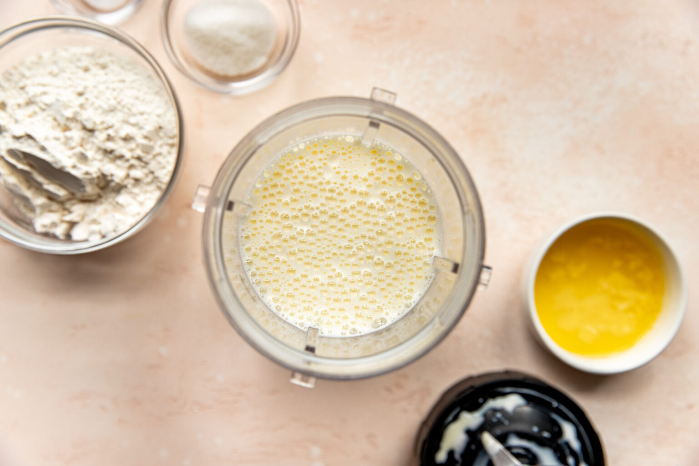
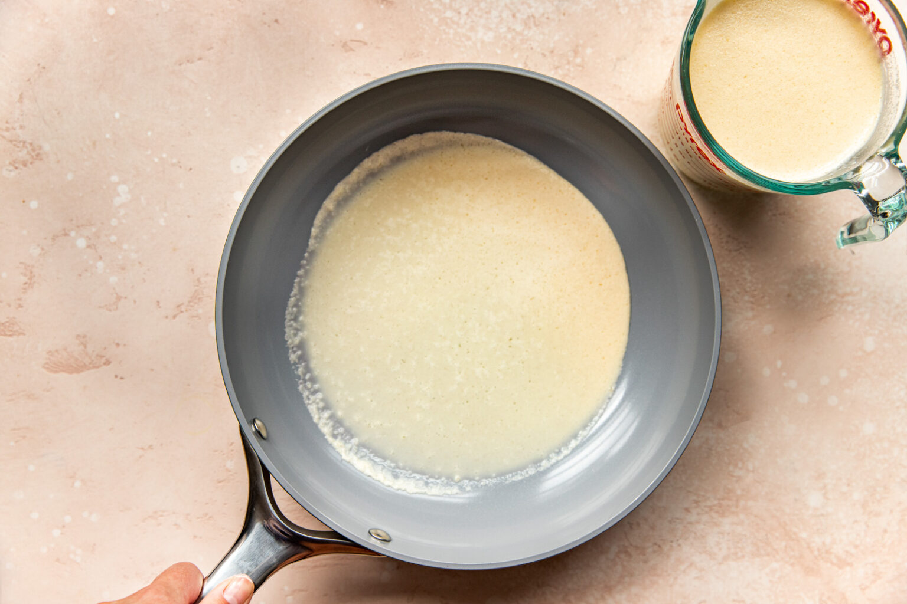
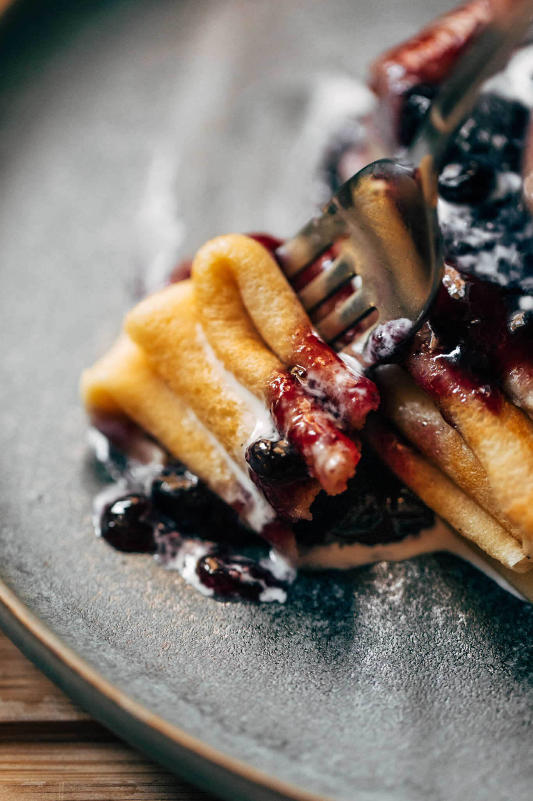
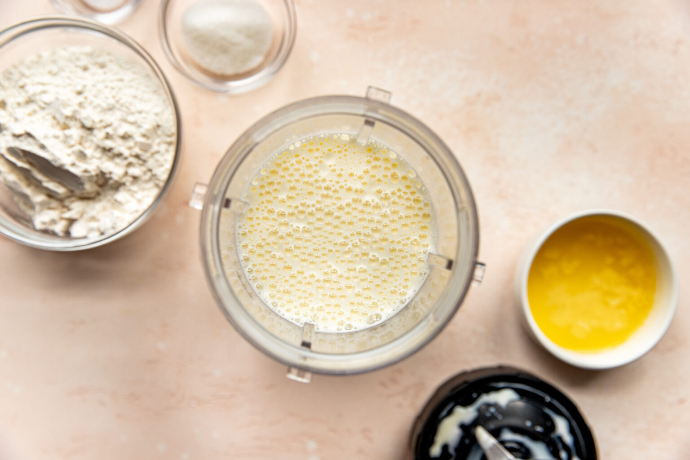
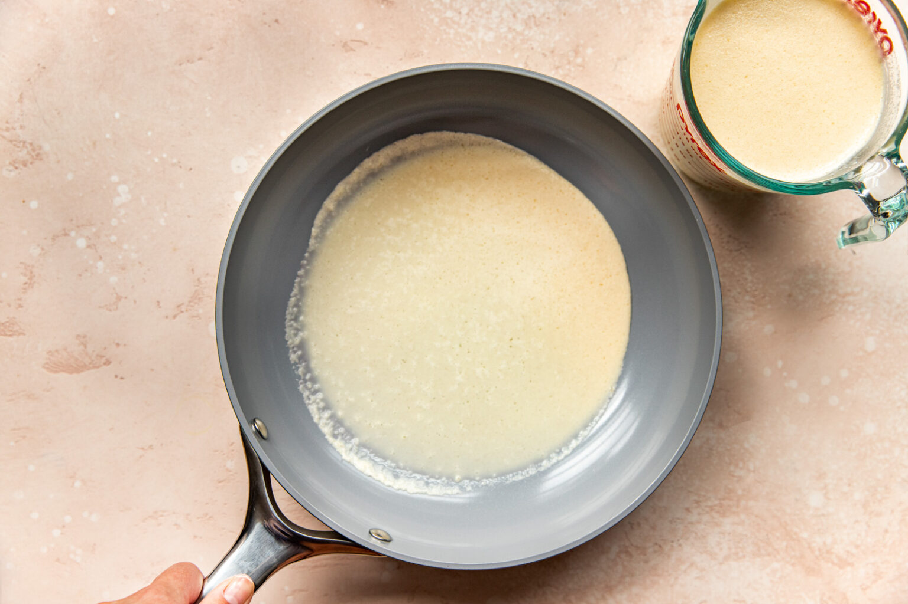
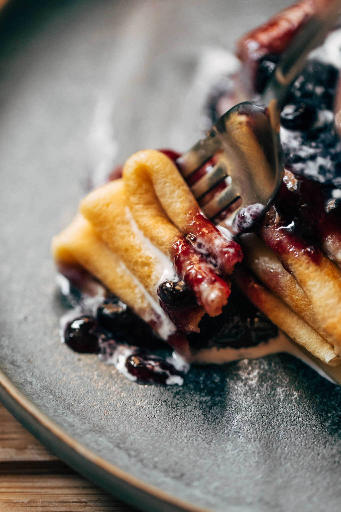
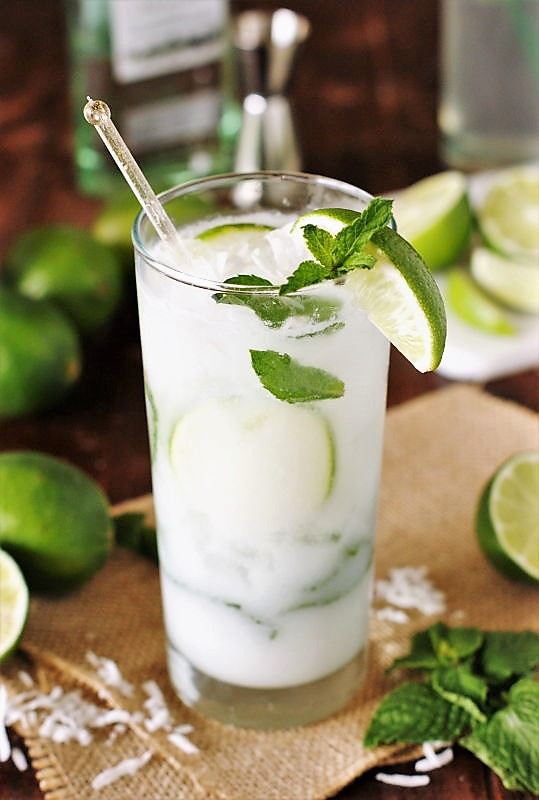
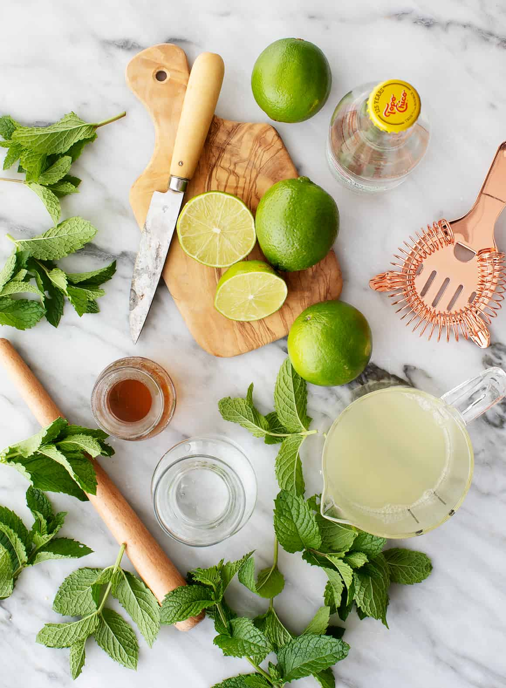
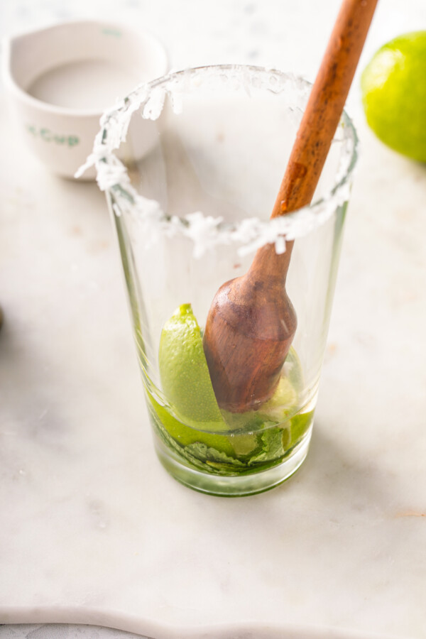

My daughter learned to make these cookies at a baking camp at Zingermanns and has tweaked the recipe to fit the taste buds of her siblings. They are extremely sugary so the salt helps to balance it. Note, these cookies are best eaten very quickly.
Let's Eat
Here are some of our favorite recipes!
Double Chocolate Cookies Recipe
Author: Sarah Yiler
Prep Time: 10 minutes
Cook Time: 12 minutes
Calories: 300 per serving


-
-
- 1. Unsalted butter
- 2. Granulated Sugar
- 3. Packed light or dark brown sugar
- 4. Large egg
- 5. Pure vanilla extract
- 6. Semi-sweet chocolate chunks (melted)
- 7. All-purpose flour
- 9. Natural unsweetened cocoa powder
- 10. Baking soda
- 11. Salt
- 12. Semi-sweet chocolate chunks
-
- 1. In a mixing bowl cream together the butter, granulated sugar, and brown sugar
- 2. Add the egg and vanilla extract and beat well
- 3. Add the melted chocolate
- 4. In a separate bowl combine the flour, baking soda, cocoa powder and salt
- 5. Combine the wet and dry ingredients
- 6. Add the unmelted chocolate chunks
- 7. Form 15 cookies and place on a baking sheet
- 8. Cookie for 12 to 13 minutes at 350 degrees
- 9. Let it cool before enjoying your cookies!
Swedish Pancake Recipe
Author: June Brightman
Prep Time: 15 minutes
Cook Time: 20 minutes
Calories: 500 per serving
 





-
On a study abroad trip to Sweden, I stopped in this small cafe to wait out the rain. I was more than prepared to order a croissant and expresso when I saw this older lady eating a delightful breakfast with fruits. I asked the waiter "what is that dish?" He responded "Plättar". After one bite, I vowed that if I never learned how to make anything else in this world, I would learn how to make Plättar.
-
- 1. 3 eggs
- 2. 1 1/4 cups of milk
- 3. 3/4 cup of all-purpose flour
- 4. 1 tablespoon of white sugar
- 5. 1/2 teaspoon of salt
- 6. 1 tablespoon of butter
-
- 1. Beat eggs in a bowl with an electric mixer until thick and lemon-colored, 3 to 5 minutes. Stir in milk.
- 2. Sift together flour, sugar, and salt in a separate bowl. Add to egg mixture; mix until batter is smooth.
- 3. Grease a griddle with butter; heat over medium heat.
- 4. Drop tablespoonfuls of batter on the griddle.
- 6. Spread to make thin pancakes.
- 7. Cook until light brown on bottom, 1 to 2 minutes.
- 8. Flip and continue cooking until second side is light brown, 1 to 2 minutes more.
- 9. Let it cool of before folding it in fours.
- 10. Garnish with desired fruits and serve.
Coconut Mojito Mocktail
Author: Susie Castillo
Prep Time: 10 minutes
  -
After a long day of work, I decided to go to a local restaurant to unwind. I loked at the menu and wanted to order something that made me feel like I was in another island on the beach. The bartender asked me if I wanted to try a coconut mojito mocktail. I was hesitant at first but, after one sip I was hooked. I asked the bartender for the recipe and he gladly gave it to me. He said he had a rough day at work not too long ago and his girlfriend decided to make something to make him feel like he was on vacation. I have been making it ever since. He passed the recipe down to me and I am going to pass it down to anyone who needs to relax after a long day at work.
-
- 1. 1/2 cup of coconut water
- 2. 1/2 cup of coconut milk
- 3. 1/2 cup of sparling water or club soda
- 4. 1/4 cup of lime juice
- 5. 1/4 cup of mint leaves
- 6. 1/4 cup of simple syrup
- 6. 1/4 cup of ice
-
- 1. Sprinkle coconut flakes on plate
- 2. Cut mint wheel - we will use this later
- 3. Run a lime wedge around the rim of cup
- 4. Garnish rim with coconut flakes and add ice
- 6. Add coconut water, coconut milk, sparkling water, lime juice, mint leaves, and simple syrup to a shaker
- 7. Shake well
- 8. Pour into cup
- 9. Garnish with mint wheel
- 10. Enjoy!